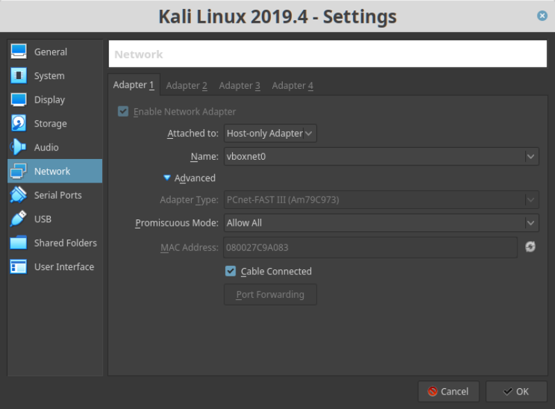

Nemesis-v1.0.1
▸ Nemesis-v1.0.1
▸ 1. Scan Network
▸ 2. Finding Services and Ports
▸ 3. Enumerate
▸ 3.1 Inspect traffic with Burp Suite
▸ 3.2 Getting id_rsa file
▸ 3.2 Connecting via SSH
▸ 3.3 Reading the first flag
▸ 4. Privilege Escalation
▸ 4.1 pspy2 – Unprivileged Linux Process Snooping
▸ 4.2 Creating a reverse shell
▸ 4.3 Getiin the second flag.
▸ 4.4 Root Shell
▸ 4.4.1 Decrypting the password
▸ Getting 3rd flag
Difficulty: Intermediate to Hard.
Flag: 3 flags.
Learning:
• Download: https://drive.google.com/file/d/15HwB9vDWUQJ7887rLOv5kQ0fIpe1BWOs/view?usp=sharing
• Download (Mirror): https://download.vulnhub.com/ia/Nemesis-v1.0.1.ova
• Download (Torrent): https://download.vulnhub.com/ia/Nemesis-v1.0.1.ova.torrent
Install the machine on VirtualBox:
1. Download the file and extract it.
2. On Virtualbox choose File->Import Appliance.
3. Select the file “ova”.
4. Accept to import.

Watch your Machine IP.
$ ifconfig
Output:
Diagram